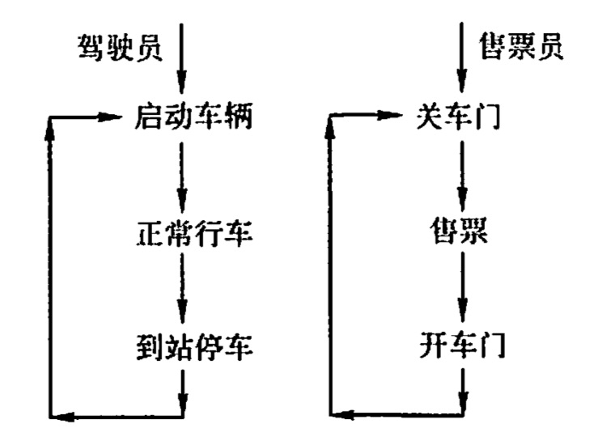

同步与互斥例题
2022.07.15
在一个仓库可以存放A、B两种产品，要求
- 每次只能存入一种产品
- A产品数量 - B产品数量 < M
- B产品数量 - A产品数量 < N
semaphore mutex = 1;semaphore moreA = M-1;semaphore moreB = N-1;productA(){while(1){P(moreA);P(mutex);put(A);V(mutex);V(moreB);}}productB(){while(1){P(moreB);P(mutex);put(B);V(mutex);V(moreA);}}面包师有很多面包，由n名销售人员推销。每名顾客进店后取一个号，并且等待叫号，当一名销售人员空闲时，就叫下一个号。试设计一个使销售人员和顾客同步的算法。
// 下面是我自己想的方法semaphore seller = 0;semaphore customer = 0;seller(){while(1){V(seller);P(customer);// serve();}}customer(){V(customer);P(seller);// buy();}我的想法，销售员和顾客的地位一样。两人碰成一对就可以产生一笔交易。
//下面是答案int i=0,j=0;semaphore mutex_i = 1; // 互斥访问计数器semaphore mutex_j = 1;Consumer(){//进入面包店;P(mutex_i);取号;i++;V(mutex_i);// 等待叫号i并购买面包;}Seller(){while(1){P(mutex_j);if(j<i){叫号j;j++;V(mutex_j);销售面包;}else{V(mutex_j);休息片刻;}}}某工厂有两个生产车间和一个装配车间，两个生产车间分别生产 A，B两种零件，装配车间的任务是把A，B 两种零件组装成产品。两个生产车间每生产一个零件后，都要分别把它们送到专配车问的货架F1，F2上。F1存放零件A，F2存放零件B，F1和F2的容量均可存放10个零件。裝配工人每次从货架上取一个零件A和一个零件B后组装成产品。 请用 P,V操作进行正确管理。
semaphore f1 = 10;semaphore f2 = 10;semaphore A = 0;semaphore B = 0;semaphore mutex1 = 1;semaphore mutex2 = 1;room1(){while(1){// produce AP(f1);P(mutex1);// put AV(mutex1);V(A);}}room2(){while(1){// produce BP(f2);P(mutex2);// put BV(mutex2);V(B);}}room3(){while(1){P(A);P(B);P(mutex1);// get AV(mutex1);V(f1);P(mutex2);// get BV(mutex2);V(f2);// prroduce with A and B}}寺庙有小和尚、老和尚若干，有一水缸，由小和尚提水入缸供老和尚饮用。水缸可容10桶水，水取自同一井中。水井径窄，每次只能容一个桶取水。水桶总数为3个。每次入缸取水仅为 1桶水，且不可同时进行。试给出有关从缸取水、入水的算法描述。
semaphore bucket = 3;semaphore place = 10;semaphore water = 0;semaphore mutex = 1; // 互斥的访问水缸semaphore mutex2 = 1;// 互斥的访问水井small(){P(place); // 确认有地方放再去打水（防止桶都拿走了，缸满了，老和尚没法喝水）P(bucket); // 拿桶P(mutex2);// 取水V(mutex2);P(mutex);// 倒水V(mutex);V(water);V(bucket); // 放桶}old(){P(water); // 确认有水再去打水（防止桶都拿走了，缸空了，小和尚没办法打水）P(bucket); // 拿桶P(mutex);// 取水V(mutex);V(place);// 喝水V(bucket); // 放桶}下图所示，三个合作进程P1，P2，P3，它们都需要通过同一设备输入各自的数据a，b，c，该输入设备必须互斥地使用，而且其第一个数据必须由P1进程读取，第二个数据必须由P2进程读取，第三个数据必须由P3进程读取．然后，三个进程分别对输入数据进行下列计算

P1: x = a+b;P2: y = a*b;P3: z = y+c-a;最后，P1进程通过所连接的打印机将计算结果 x，y，z的值打印出来。请用信号量实现它 们的同步。
semaphore g1,g2 = 0;semaphore c21,c22 = 0;//semaphore mutex=1; // 三个进程不会同时访问输入设备，所以不用mutex了P1(){// 获取数据getA();V(g1);// 计算数据calculate();// 打印输出P(c21);print();}P2(){// 获取数据P(g1);getB();V(g2);V(c21);// 计算数据calculate();V(c22);}P3(){// 获取数据P(g2);getC();// 计算数据P(c22);calculate();}桥如下图所示。车流方向如箭头所示。回答如下问题： 1）假设桥上每次只能有一辆车行驶，试用信号灯的 P,V操作实现交通管理。 2）假设桥上不允许两车交会，但允许同方向多辆车一次通过（即桥上可有多辆同方向行驶的车）。试用信号灯的 P.V操作实现桥上的交通管理。

semaphore mutex=1;sorth(){P(mutex);// 过桥V(mutex);}north(){P(mutex);// 过桥V(mutex);}// 错误答案，没有考虑到第一个方向的车很多时，counter>0，对面来的同样会进去，产生冲突// 所以要拆解成两个计数器int counter=0;semaphore mutex=1;semaphore mutex_c=1;sorth(){P(mutex_c);if(counter==0) P(mutex);count++;V(mutex_c);// 过桥P(mutex_c);count--;if(counter==0) V(mutex);V(mutex_c);}sorth(){P(mutex_c);if(counter==0) P(mutex);count++;V(mutex_c);// 过桥P(mutex_c);count--;if(counter==0) V(mutex);V(mutex_c);}int counterNS=0;int counterSN=0;semaphore mutex=1;semaphore mutex_NS=1;semaphore mutex_SN=1;sorth(){P(mutex_SN);if(counterSN==0) P(mutex);counterSN++;V(mutex_SN);// 过桥P(mutex_SN);counterSN--;if(counterSN==0) V(mutex);V(mutex_SN);}sorth(){P(mutex_NS);if(counterNS==0) P(mutex);counterNS++;V(mutex_NS);// 过桥P(mutex_NS);counterNS--;if(counterNS==0) V(mutex);V(mutex_NS);}假如有两个线程（编号为0和1）需要去访问同一个共享资源，为避免竞争状态的问题，我们必须实现一种互斥机制，使得在任何时候只能有一个线程访问这个资源。假设有如下一段代码：
bool flag[2]; // flag数组，初始化为FALSEEnter_Critical_Section(int my_thread_id, int other_thread_id){while(flag[other_thread_id]==true);flag[my_thread_id]=true;}Exit_Critical_Section(int my_thread_id, int other_thread_id){flag[my_thread_id]=false;}当一个线程想要访问临界资源时，就要掉用上述的这两个函数。例如，线程0的代码可能是这样的：
Enter_Critical_Section(0,1);使用这个资源;
Exit_Critical_Section(0,1);做其他的事情;
试问：
- 以上的这种机制能够实现资源互斥访问吗？为什么？
- 若把Enter_Critical_Section()函数中的两条语句互换一下位置，结果会如何？
不可以，因为自己的flag标志成了正在使用前如果对方进程也正好要标记，两个进程都可以访问资源。
也不可以，那样造成死锁，两个进程都以为对方要进入但实际上都在等待。
自行车生产线上有一个箱子，其中有N个位置（N≥3），每个位置可存放一个车架或一个车轮；又设有3名工人，其活动分别为：
// 工人1do{加工一个车架;车架放到箱中;}while(1)// 工人2do{加工一个车轮;车架放到箱中;}while(1)// 工人3do{取车架;取车轮;组装;}while(1)是分别用信号量与PV操作实现三名工人的合作，解中不含死锁
// 错误答案，没有意识到车架或车轮完全占满存储区的情况semaphore mutex = 1;semaphore place = N;semaphore 车架 = 0;semaphore 车轮 = 0;p1(){while(1){//加工一个车架;P(place);P(mutex);//放入V(mutex);V(车架);}}p2(){while(1){//加工一个车轮;P(place);P(mutex);//放入V(mutex);V(车轮);}}p3(){while(1){P(车架);P(车轮);P(mutex);// 拿走车架车轮V(mutex);V(place);}}// 正确答案semaphore mutex = 1;semaphore placeJ = N-2;semaphore placeL = N-1;semaphore 车架 = 0;semaphore 车轮 = 0;p1(){while(1){//加工一个车架;P(placeJ);P(mutex);//放入V(mutex);V(车架);}}p2(){while(1){//加工一个车轮;P(placeL);P(mutex);//放入V(mutex);V(车轮);}}p3(){while(1){P(车架);P(车轮);P(车轮);P(mutex);// 拿走车架车轮V(mutex);V(placeJ);V(placeL);V(placeL);}}P，Q，R共享一个缓冲区，P，Q构成一对生产者-消费者，R既为生产者又为消费者。使用PV操作实现其同步。
semaphore mutex = 1; //共享缓冲区互斥访问semaphore product = 0;// 产品semaphore place = N; // 存储区大小P(){while(1){// 生产商品P(place);P(mutex);// 放入产品V(mutex);V(product);}}Q(){while(1){P(product);P(mutex);// 拿出产品V(mutex);V(place);}}R(){while(1){if(product==N){P(product);P(mutex);// 拿出产品V(mutex);V(place);}if(place==N){// 生产商品P(place);P(mutex);// 放入产品V(mutex);V(product);}}}理发店里有一位理发师、一把理发椅和n把供等候理发的顾客坐的椅子。若没有顾客，理发师便在理发椅上睡觉，一位顾客到来时，顾客必须叫醒理发师，若理发师正在理发时又有顾客来到，若有空椅子可坐，则坐下来等待，否则就离开。试用P,V操作实现，并说明信号量的定义和初值。
int waiting = 0; // 等待理发的顾客数int chairs = n; // 未顾客准备的椅子数semaphore customer=0,barber=0,mutex=1;Barber(){while(1){P(customer);P(mutex);waiting--;V(barber);P(mutex);Cut_Hair();}}Customer(){P(mutex);if(waiting<chairs){waiting++;V(customer);V(mutex);P(barber);Get_Hair();}else{V(mutex);}}假设一个录像厅有1,2,3三种不同的录像片可由观众选择放映，录像厅的放映规则如下： 1）任一时刻最多只能放映一种录像片，正在放映的录像片是自动循环放映的，最后一名观众主动离开时结束当前录像片的放映。 2）选择当前正在放映的录像片的观众可立即进入，允许同时有多位选择同一种录像片的观众同时观看，同时观看的观众数量不受限制。 3）等待观看其他录像片的观众按到达顺序排队，当一种新的录像片开始放映时，所有等待观看该录像片的观众可依次序进入录像厅同时观看。用一个进程代表一个观众，要求：用信号量方法 PV 操作实现，并给出信号量定义和初始值。
semaphore s0=1,s1=1,s2=1;semaphore movie1=1,movie2=0,movie3=0;int count0=0,count1=0,count2=0;videoshow1(){ // 一个看movie1的观众/* 观众入座 */P(s0);count0++;if(count0==1) P(movie1);V(s0);/* 看电影 *//* 观众离场 */P(s0);count0--;if(count0==0) V(movie2); // 当天停止，下一个可以播放V(s0);}videoshow2(){ // 一个看movie2的观众/* 观众入座 */P(s1);count1++;if(count1==1) P(movie2);V(s1);/* 看电影 *//* 观众离场 */P(s1);count1--;if(count1==0) V(movie3); // 当天停止，下一个可以播放V(s1);}videoshow3(){ // 一个看movie1的观众/* 观众入座 */P(s2);count2++;if(count2==1) P(movie2);V(s2);/* 看电影 *//* 观众离场 */P(s2);count2--;if(count2==0) V(movie1); // 当天停止，下一个可以播放V(s2);}南开大学和天津大学之间有一条弯曲的路，每次只九许一辆自行车通过，但中间有小的安全岛 M（同时允许两辆车通过)，可供已进入两端的两辆小车错车，如下图所示。设计算法并使用P，V操作实现。

semaphore LT = 1;semaphore KN = 1;semaphore N = 1;semaphore T = 1;N(){P(N);P(KN);// go N to K;// go into M;V(KN);P(LT);// go L to TV(LT);V(N);}T()同理公共汽车上驾驶员和售票员的活动分别如下图所示。驾驶员的活动：启动车辆，正常行车，到站停车；售票员的活动：关车门，售票，开车门。在汽车不断地到站、停车、行驶的过程中，这两个活动有什么同步关系？用信号量和B，V操作实现它们的同步

semaphore ticket = 0;semaphore stop = 1;驾驶员(){while(1){P(ticket);启动车辆();正常行车();到站停车();V(stop);}}售票员(){while(1){乘客上下();关车门();售票();V(ticket);P(stop);开车门();}}
【2009 统考真题】三个进程P1,P2,P3互斥使用一个包含N(N>0）个单元的缓冲区。P1每次用produce()生成一个正整数并用put()送入缓冲区某一空单元;P2每次用getodd()从该缓冲区中取出一个奇数并用countodd()统计奇数个数；P3每次用geteven()从该缓冲区中取出一个偶数并用counteven()统计偶数个数。请用信号量机制实现这三个进程的同步与互斥活动，并说明所定义的信号量的含义（要求用伪代码描迷）。
semaphore mutex = 1; // 互斥访问存储区semaphore odd = 0; // 记录奇数个数semaphore even = 0; // 记录偶数个数semaphore place = N; // 记录空余存储区数量P1(){int number;while(1){number = produce();P(place);P(mutex);put(number);V(mutex);if(number%2)V(odd);elseV(even);}}P2(){int number;while(1){P(odd);P(mutex);number = getodd();V(mutex);V(place);countodd();}}P2(){int number;while(1){P(even);P(mutex);number = geteven();V(mutex);V(place);counteven();}}【2011 统考真题】某银行提供1个服务窗口和10个供顾客等待的座位。顾客到达银行时，若有空座位，则到取号机上领取一个号，等待叫号。取号机每次仅九许一位顾客使用。当营业员空闲时，通过叫号选取一位顾客，并为其服务。顾客和营业员的活动过程描述如下：
cobegin{provess 顾客i{从取号机获取一个号码;等待叫号;获取服务；}process 营业员{while(TRUE){叫号;为客户服务;}}}coend请添加必要的信号量和P,V[或 wait(), signal()]操作，实现上述过程中的互斥与同步要求写出完整的过程，说明信号量的含义并赋初值。
x
semaphore mutex = 1; // 互斥访问取号机semaphore officer = 0; // 互斥访问营业员semaphore wait = 10; // 空位semaphore customer = 0;// 等待的人cobegin{provess 顾客i{P(wait);P(mutex);从取号机获取一个号码;V(mutex);V(customer);P(officer); // 等待叫号;V(wait);获取服务;}process 营业员{while(TRUE){P(customer);V(officer); // 叫号;为客户服务;}}}coend【2013 统考真题】某博物馆最多可容纳 500人同时参观，有一个出入口，该出入口一次仅允许一人通过一人通过。参观者的活动描述如下：
cobegin{参观者进程i:{...进门;...参观;...出门;...}}coendsemaphore place = 500;semaphore mutex = 1;cobegin{参观者进程i:{P(place)P(mutex);进门;V(mutex);参观;P(mutex);出门;V(mutex);V(place);}}coend【2014统考真题】系統中有多个生产者进程和多个消费者进程，共享一个能存放 1000件产品的环形缓冲区（初始为空）。缓冲区未满时，生产者进程可以放入其生产的一件产品，否則等待;缓冲区未空时，消费者进程可从缓冲区取走一件产品，否则等待。要求一个消费者进程从缓冲区连续取出 10件产品后，其他消费者进程才可以取产品。请使用信号量P,V (waito,signal（）操作实现进程间的互斥与同步，要求写出完整的过程，并说明所用信号量的含义和初值。
x
int count = 0;semaphore cus = 1;semaphore place = 1000;semaphore product = 0;semaphore mutex = 1;producer(){while(1){P(place);P(mutex);put();V(mutex);V(product);}}customer(){while(1){P(cus);for(int i;i<10;i++){P(product);P(mutex);get();V(mutex);V(place);}V(cus);}}【2015统考真题】有A,B两人通过信箱进行辨论，每个人都从自己的信箱中取得对方的问题。将答案和向对方提出的新问题组成一个邮件放入对方的邮箱中。假设A的信箱最多放M个邮件，B的信箱最多放N个邮件。初始时 A的信箱中有x个邮件(0<x<M），B的信箱中有y个邮件（0<y<N）。辦论者每取出一个邮件，邮什数减 1。A和B两人的操作过程描述如下：
A{while(TRUE){从A的信箱中取出一个邮件;回答问题并提出一个新问题;将新邮件放入B的信箱;}}B{while(TRUE){从B的信箱中取出一个邮件;回答问题并提出一个新问题;将新邮件放入A的邮箱;}}当信箱不为空时，辨论者才能从信箱中取邮件，否则等待。当信箱不满时，辩论者才能将新邮件放入信箱，否则等待。请添加必要的信号量和P,VI或wait0, signalO 1 操作，以实现上述过程的同步。要求写出完整的过程，并说明信号量的含义和初值。
semaphore Anum = x;semaphore Bnum = y;semaphore Aplace = N-x;semaphore Bplace = M-y;semaphore Amutex = 1;semaphore Bmutex = 1;A{while(TRUE){P(Anum);P(Amutex);从A的信箱中取出一个邮件;V(Amutex);V(Aplace);回答问题并提出一个新问题P(Bplace);P(Bmutex);将新邮件放入B的信箱;V(Bmutex);V(Bnum);}}B{while(TRUE){P(Bnum);P(Bmutex);从B的信箱中取出一个邮件;V(Bmutex);V(Bplace);回答问题并提出一个新问题;P(Aplace);P(Amutex);将新邮件放入A的邮箱;V(Amutex);V(Anum);}}【2017统考真题】某进程中有了个并发执行的线程threadl,thread2 和thread3，其伪代码如下所示。
//复数的结构类型定义typedef struct{float a;float b;}cnum;cnum x,y,z;//全局变量// 计算两个复数之和cnum add(cnum p,cnum q){cnum s;s.a = p.a + q.a;s.b = p.b + q.b;return s;}thread1{cnum w;w = add(x,y);// ...}thread2{cnum w;w = add(y,z);// ...}thread3{cnum w;w.a = 1;w.b = 1;z = add(z,w);y = add(y,w);// ...}请添加必要的信号量和P,V[ 或 wait(), signal() ]操作，要求确保线程互斥访问临界资源，并且最大限度地并发执行。
x
//复数的结构类型定义typedef struct{float a;float b;}cnum;cnum x,y,z;//全局变量semaphore Y=0;// 计算两个复数之和cnum add(cnum p,cnum q){cnum s;s.a = p.a + q.a;s.b = p.b + q.b;return s;}thread1{cnum w;P(Y);w = add(x,y);// ...}thread2{cnum w;P(Y);w = add(y,z);// ...}thread3{cnum w;w.a = 1;w.b = 1;z = add(z,w);y = add(y,w);V(Y);V(Y);// ...}【2019统考真题】有n(n≥3）名哲学家團坐在一张園桌边，每名哲学家交替地就餐和思考。在國東中心有m（m≥1）个碗，每两名哲学家之问有一根筷子。每名哲学家必须取到一个碗和两侧的筷子后，才能就餐，进餐完毕，将碗和筷子放回原位，并继续思考． 为使尽可能多的哲学家同时就餐，且防止出现死锁现象，请使用信号量的P，V操作[ wait()，signal()操作】描述上述过程中的至斥与同步，并说明所用信号量及初值的含义。
semaphore mutex = 1; // 保证哲学家需要一次性获得两个筷子semaphore bowl = m;semaphore k[n];for(int i=0;i<n;i++)k[i] = 1;phi(i){ // i = 0,1,2,3...while(1){P(bowl);P(mutex);P(i);P((i+1)%n);V(mutex);// 吃饭P(mutex);V(i);V((i+1)%n);V(mutex);V(bowl);}}方法2：利用🥣碗的数量避免死锁，只需要让bowl = min{n-1,m}【2020 统考真题】现有5个操作A、B、C、D和E，操作C 必须在A和B完成后执行，操作E必须在C和D完成后执行，请使用信号量的wait()、signal()操作（P、V操作）描述上述操作之间的同步关系，并说明所用信号量及其初值。
x
A,B -> CC,D -> Esemaphore C_A=0,C_B=0;semaphore E_C=0,E_D=0;A{V(C_A);}B{V(C_B);}C{P(C_A);P(C_B);V(E_C);}D{V(E_D);}E{P(C_E);P(D_E);}【2021 统考真题】下表给出了整型信号量S 的wait()和 signal()操作的功能描述，以及来用开/关中断指令实现信号量操作互斥的两种方法。
x
// 功能描述semaphore S;wait(S){while(S<=0);S=S-1;}signal(S){S=S+1;}// 方法1semaphore S;wait(S){关中断;while(S<=0);S=S-1;开中断;}signal(S){关中断;S=S+1;开中断;}// 方法2semaphore S;wait(S){关中断;while(S<=0){开中断;关中断;}S=S-1;开中断;}signal(S){关中断;S=S+1;开中断;}回答下列问题 1）为什么在wait()和 signal()操作中对信号量S的访问必须互斥执行？
因为S属于共享资源，多个进程都可以通过wait()，signal()对S进行读写，所以他们不可以同时访问（互斥访问）。
2）分别说明方法1和方法2是否正确。若不正确，请说明理由。
方法1不正确，如果S≤0，方法一将持续等待资源，并且由于设置了开中断，该进程不能下处理机，新的进程没办法继续提供资源。方法二正确，检查S后，开中断，允许别的进程抢占处机。
3）用户程序能否使用开/关中断指令实现临界区互斥？为什么？
不能。因为用户程序不能定义开中断和关中断，只能由操作系统进行，运行在内核态。